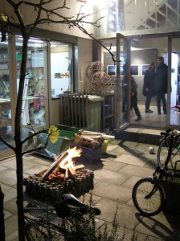

Earlier this month we gathered to show and discuss extracts from films that put an emphasis on ‘location’. The films chosen seemed to divide into downbeat and depressed (mainly London), and upbeat and exotic (Los Angeles, Shetland, Bruges, Paris – but not Alphaville). Here they are:
-
Robert B chose: In Bruges, 2008, director Martin McDonagh
Peter chose The girl chewing gum, 1976, director John Smith
Dan chose Into the west, 1993, director Mike Newell
Dan also chose Zazie dans le métro, 1960, director Louis Malle
Robin chose Alphaville, 1965, director Jean-Luc Godard
John chose To live and to die in L.A., 1985, director William Friedkin
Robert B also chose (for the children in the audience) Thunderbirds, 2004, director Jonathan Frakes
Jonathan chose 77 beds, 2003, director Alnoor Dewshi
Aileen chose Withnail and I, 1987, director Bruce Robinson
Lucy chose The edge of the world, 1937, director Michael Powell
As well as continuing to hold evenings where we share scenes from our favourite films (next up, ‘locations’), we recently gathered for a new initiative: the 115 Whole Film Club. The inaugural event combined a screening of The Ladykillers (1955) to an audience of 12, with refreshments that Mrs Wilberforce — played by Katie Johnson — might have served in her front parlour: beer, tea, cake and sandwiches.

Another open view evening. Four co-op members – Vanora Bennett, Dan Monck, Robin Kinross and Aileen Harvey – put on a diverse display: several steps to making a violin; two balsa-wood model aeroplanes and mobile phone videos from aeroplane models in flight by ex-115 member Maarten de Reus; 83 tear-off calendar cartoons by the Dutch cartoonist Peter van Straaten with translated captions; a found Greek alphabet made up of stones and four photographs taken at midnight of four locations in the Western Isles of Scotland. Guests and co-op members enjoyed food, mulled wine and a small bonfire in the front courtyard.

Our annual walk around a particular ‘quarter’ of London took place on 21 October. This time we went to Fitzrovia, which ‘runs north of Oxford Street – and who can blame it?’ (Len Deighton). As always, the occasion was convened by Robert Bradbrook, who plotted our itinerary. We stopped at some renowned spots – the Post Office Tower, the Middlesex Hospital (now demolished), and Newman Passage – as well as places with more personal memories (the site of the old Schmidt’s restaurant in Charlotte Street and the now defunct Agra restaurant in Whitfield Street). We ran out of time for the western leg of the journey, and ended the evening with a meal in the Spaghetti House on Goodge Street – opened in 1955 and still in the ownership of the families who set it up.

Simon Jones (furniture designer, maker, and architect) is joining Workplace Co-op 115, designing furniture for an enterprise on Fogo Island, Newfoundland, Canada.
We are looking for another member to join us. We have a vacancy for a workshop user who also wants some office space. Interested designers and / or makers are invited to get in touch info@115.org.uk
We recently gathered to share scenes from our favourite films, as we do every so often. The theme this time was ‘food’ – a favourite subject of the co-op. We have compiled a list of our choices:
- Dan chose: Soylent Green, 1973, director Richard Fleischer
-
Vanora chose: Babette’s feast, 1987, director Gabriel Axel
-
Robert B chose: Little Miss Sunshine, 2006, directors Jonathan Dayton, Valerie Faris
-
Lucy chose: Life is sweet, 1990, director Mike Leigh
-
Jonathan chose: Theatre of blood, 1973, director Douglas Hickox
-
Chris chose: A book of hours, 2001, director Chris Saunders
-
Aileen chose: Eat, drink, man, woman, 1994, director Ang Lee
-
Rod & Peter chose: Five easy pieces, 1970, director Bob Rafelson
-
Peter chose: My dinner with André, 1981, director Louis Malle
-
Lina chose: The rocky horror picture show, 1975, director Jim Sharman
-
Robin chose: The Punch and Judy man, 1963, director Jeremy Summers
-
Robert B chose: Hot shots!, 1981, director Jim Abrahams
-
John chose: Tampopo, 1985, director Jûzô Itami
-
Louis chose: The scarecrow, 1920, directors Edward F. Cline, Buster Keaton
-
James chose: The cook, the thief, his wife, and her lover, 1989, director Peter Greenaway
We recently gathered to share scenes from our favourite films, as we do every so often. The theme this time was ‘romance’. Slightly late for Valentine’s day, we have compiled a list of our choices:
- Rod chose: Harold & Maude, 1971, USA, dir: Hal Ashby
-
Robin chose: La boulangère de Monceau, 1963, France, dir: Éric Rohmer
-
Mike chose: The Long Goodbye, 1973, USA, dir: Robert Altman
-
James chose: Together, 2000, Sweden, dir: Lukas Moodysson
-
Duncan chose: Don’t Look Now, 1973, UK/Italy, dir: Nicolas Roeg
-
Jonathan chose: The Trouble with Love and Sex (a short animation he’d been working on for Relate, 2010, UK)
-
Dan chose: Team America: World Police, 2004, USA/Germany, dir: Trey Parker
-
Peter chose: The Passenger, 1975, Italy/Spain/France, dir: Michelangelo Antonioni
-
Ollie chose three shorts: Meat Love, 1989, UK/USA/West Germany; Darkness/Light/Darkness, 1989, Czechoslovakia; Dimensions of Dialogue, 1982, Czechoslovakia. All dir: Jan Svankmajer
-
Becky chose: The Graduate, 1967, USA. dir: Mike Nichols
-
Robert Bradbrook chose: Up, 2009, USA, dirs: Pete Docter, Bob Peterson
-
Lisa chose: Le goût des autres, 2000, France, dir: Agnès Jaoui
-
Dan & Peter chose: Brief Encounter, 1945, UK, dir: David Lean
-
Cleo chose: Gregory’s Girl, 1981, UK, dir: Bill Forsyth
-
Vanora chose: Dr Zhivago, 1965, USA/Italy, dir: David Lean
-
Mike chose (a colour tinted version of): The Big Sleep,1946. USA, dir: Howard Hawks
-
For the second year running, the work of a 115 member has been nominated for the Designs of the Year award. Last year, Front Yard Company’s Plant Lock was nominated and this year, E. chromi – a project by James King, in collaboration with students at Cambridge University and fellow designer Alexandra Daisy Ginsberg – will feature in the exhibition which opens 16 February.
Lisa Gornick will be exhibiting the drawings that she makes when she isn’t making films. The pop-up exhibition here at Workplace 115 will be open on Friday 10 and Wednesday 15 December from 6pm until 9pm and from the 10 to the 23 December, by appointment.
{kind=link}